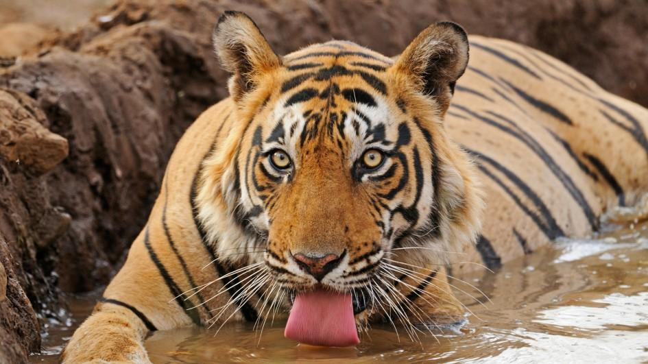

Easily recognized by its coat of reddish-orange with dark stripes, the tiger is the largest wild cat in the world. The big cat's tail is 3 feet (1 meter) long.
The powerful predator generally hunts alone, able to bring down prey such as deer and antelope. Tigers wait until dark to hunt. The tiger sprints to an unsuspecting animal, usually pulling it off its feet with its teeth and claws. If the prey animal is large, the tiger bites its throat to kill it; smaller prey is usually killed when the tiger breaks its neck. Tigers have been known to eat up to 60 pounds (27 kilograms) of meat in one night, but more often they consume about 12 pounds (5 kilograms) during a meal. It may take days for a tiger to finish eating its kill. The cat eats until it's full, and then covers the carcass with leaves and dirt. The tiger comes back to feed some more.
